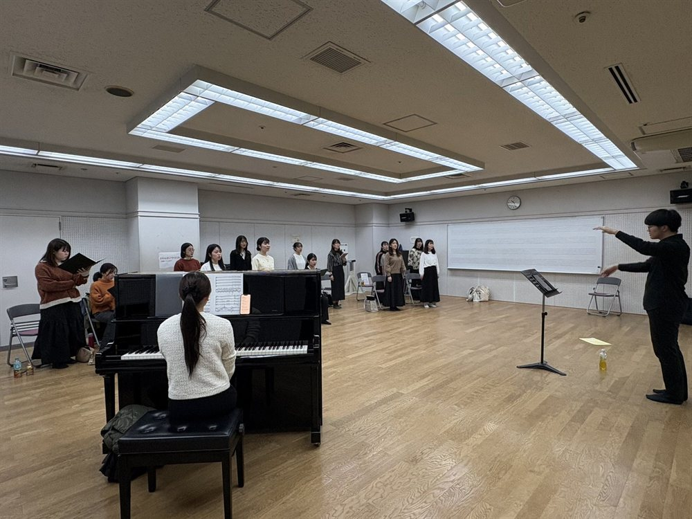
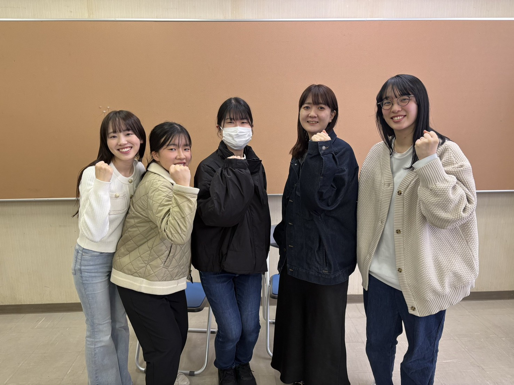
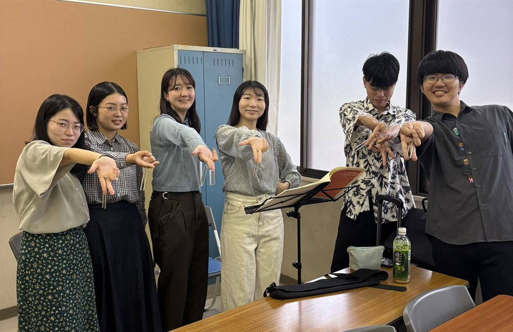
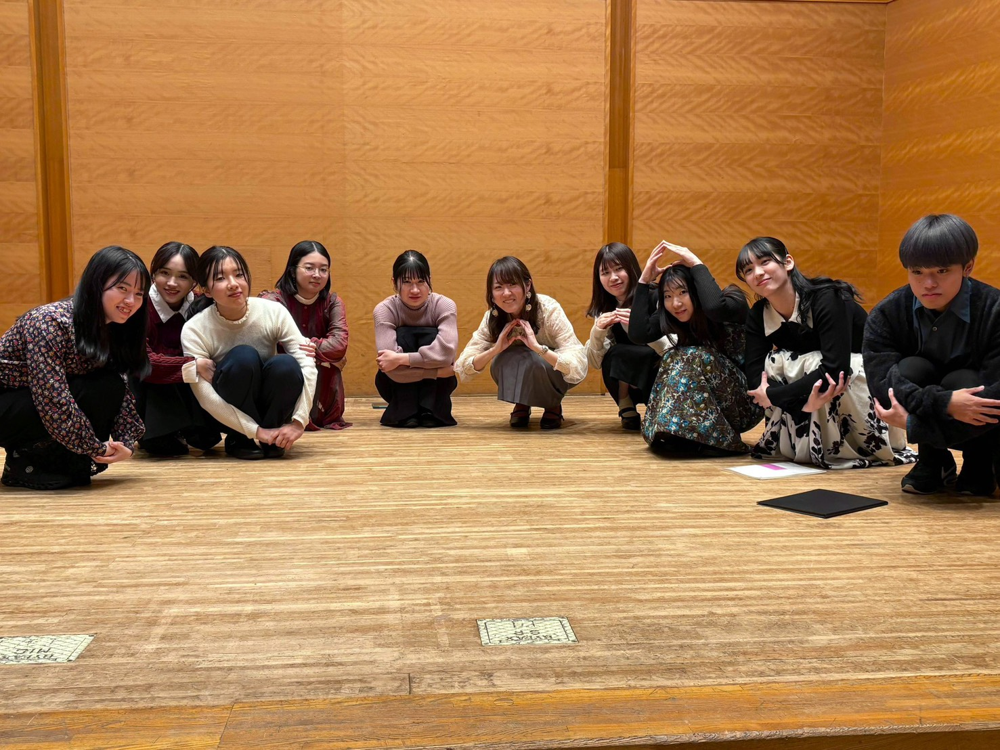
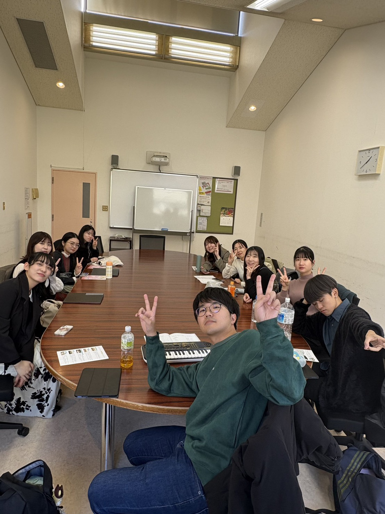

月2回・主に日曜日
10:00〜13:00
広島市内の公民館・文化センター
（新白島・横川・広島駅周辺）
社会人 1,000円 / 学生 500円
体験・見学は無料！
女声合唱（ソプラノ・アルト）
初心者〜上級者まで大歓迎
みんなで歌って、笑って。毎回の練習が楽しい時間です。





楽しみながら上手くなる、上手くなれば楽しくなる。
女声合唱を楽しみたい気持ちが少しでもあれば、広島でぜひ！